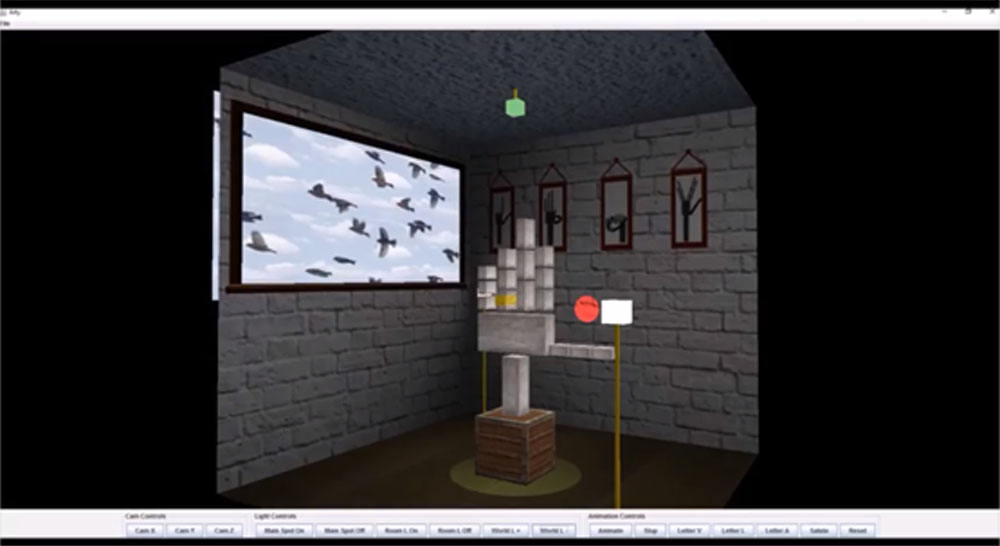
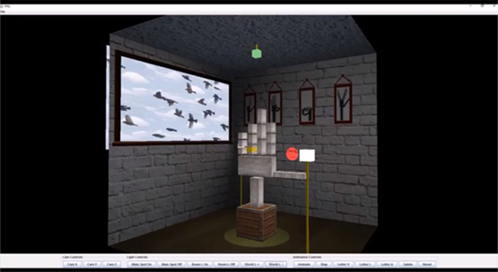

Hang on a second ...
Hang on a second ...


My 1st Year Projects

Technology used: Java
Technologies used: Java and Mindstorm Lego Robots
Technologies used: HTML, CSS, JAVASCRIPT, PHP, Photoshop CS3
Technologies used: Ruby, Gems(Colored, Colorize)

Technology used: Photoshop CS3

Technology used: Java
Technology used: Java
Technologies used: Java
Technologies used: Ruby, Gems(Sinatra, Twitter, Erb, SimpleCov, Cucumber, Capybara)

Technologies used: Java, SqLite3
 



Technology used: Photoshop CS5